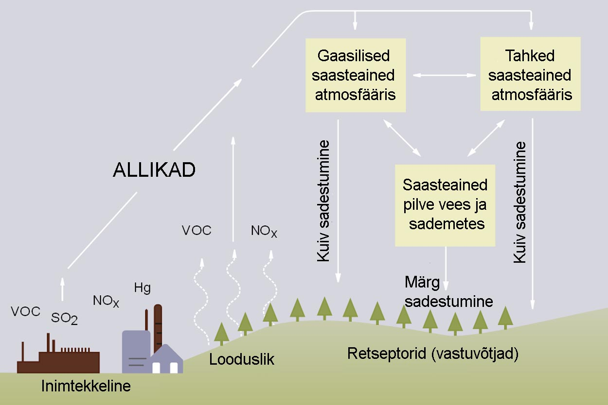

Otto and Anna on olnud juba mitu aastat kirjasõbrad. Anna elab Rootsis ja Otto Eestis. Eesti on tuntud oma lubjakivist pankrannikute poolest. Suvevaheajal käis Anna Eestis Ottol külas. Sõbrad otsustasid minna kodukoha lähedal asuva järve äärde forelli püüdma. Teekonnal järve poole rääkis Anna Ottole, et Rootsis on palju graniidist põhjaga järvi, mille vesi on küll läbipaistev ja puhas, kuid seal ei ela tänu happevihmadele üldse kalu. Anna soovis teada, kas siis Eestis ei ole happevihmasid. Otto vastas seepeale, et nagu teistes maades, sajab ka Eestis happevihmasid. Anna oli tõeliselt üllatunud. Kuidas see võimalik saab olla, et vaatamata happevihmadele, on järves ikka forelle? Kas happelised sademed ei peaks pärssima kalade kudemist? Ka Otto hakkas selle üle mõtlema. Huvitav, kuidas saavad forellid happevihmadest hoolimata ellu jääda?
Joonis 1. Happevihma teke.(joonis pärineb: Wikipedia Commons.)